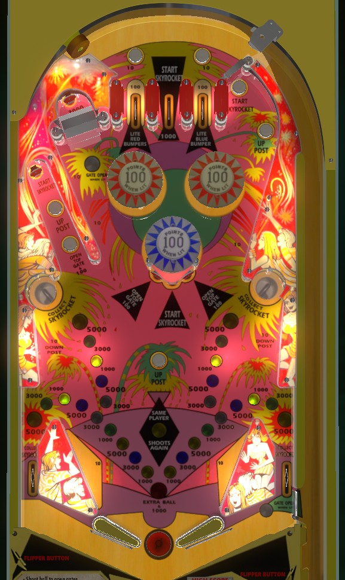

Pay close attention to the Skyrocket Value, displayed in the "explosion" of inserts in the lower half of the playfield. The Skyrocket Value is collected at the saucers and out lanes. The Skyrocket Value is rerolled by making a Start Skyrocket switch at the top lanes, center standup target, or left dead end lane. If the Skyrocket Value is 5,000 points (or 1,000 + extra ball and extra balls are on), avoid starting the Skyrocket and collect the lit value repeatedly. Otherwise, start the Skyrocket with the hope of stopping and collecting it on a better award.
The below picture of Skyrocket's playfield was taken from the VPX recreation by Rosve.

The collection of inserts in the lower half of the playfield, decoratively arranged to look like a firework explosion, indicate the Skyrocket Value. There are 10 possibilities for the Skyrocket Value: three each of 1,000, 3,000, and 5,000 points, and one option of 1,000 points + extra ball. To start the Skyrocket Value, makes the center top lane, the center standup target, or the standup target at the dead-end lane in the upper left. While the Skyrocket is running, the selected award will rapidly rotate between the 10 options. Landing in either saucer or going through either out lane will stop the Skyrocket if it is running, then award the lit value. Draining down the center also stops the Skyrocket, but does not award what it lands on. If the Skyrocket is not running, you can still collect the lit value at either saucer or the out lane.
The strategy with this feature is as follows: if the Skyrocket is displaying 1,000 or 3,000, try to start it by plunging the center top lane or the center standup target. If the Skyrocket is running, or if it is not running and displaying a desirable value, shoot into the side saucers as frequently as you can and avoid starting the Skyrocket as you do. It may be possible to trap the ball on a flipper and backhand the saucer; this may be the most accurate way to get the ball to actually settle in a saucer and not bounce out. A very skilled player can earn high scores by repeatedly collecting 5,000s, or play the game for a very long time by ensuring they always collect an extra ball, making sure in either case not to start the Skyrocket feature if at all possible.
The left top lane scores 100 points and lights the two red (upper) bumpers. The right top lane scores 100 points and lights the lower (blue) bumper. Bumpers score 10 points or 100 when lit, and turn off at the end of the ball.
The top gate is opened by pressing the first rollover button in the upper left dead end lane, or by hitting the left or right standup targets attached to the blue pop bumper. When the top gate is open, shoot up the table to the left of the bumpers to find another standup target which scores 3,000 points and opens the bottom gate. The bottom gate is a free ball gate in the right out lane that redirects the ball back to the shooter lane when used. Using the bottom gate in this way causes both gates to close.
The center post, which completely blocks the center drain when active, is raised by pressing the Up Post buttons in the center of the playfield or the upper left dead-end lane. The post lowers when the wall switches just below the side saucers are hit, or when the ball drains or the game is tilted. It may be possible to drain the ball underneath a raised flipper even if the post is active.
Maximum 1 extra ball per ball in play. Replay score thresholds can be set to award an extra ball instead of a free game. Tilt ends the ball in play only. Out lanes score the currently lit Skyrocket Value, which can include an extra ball, but there is no conventional end of ball bonus. As far as I have encountered, there is no way to set the extra ball to score points. There is no playfield Special.